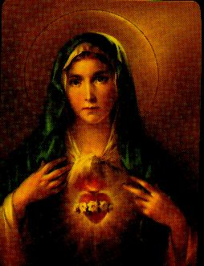

Ce Site veut synthétiser d'une façon objective, la trajectoire existentielle merveilleuse de notre SAINTE MÈRE et il rehausse les passages évangéliques plus importants de la Vie de NOTRE DAME, aussi bien que nous donne SES vertus précieuses et SES qualités qui attirent tous les cœurs.
INDEX
Notre Mère - Enfance et Jeunesse - A Apparu Joseph
L'Avis de l'Ange - Dans les Montagnes de Hébron
Le Doute de Joseph - Le Mariage de Marie - La Naissance de JÉSUS
Plusieurs Événements - La
Vie Publique de JÉSUS